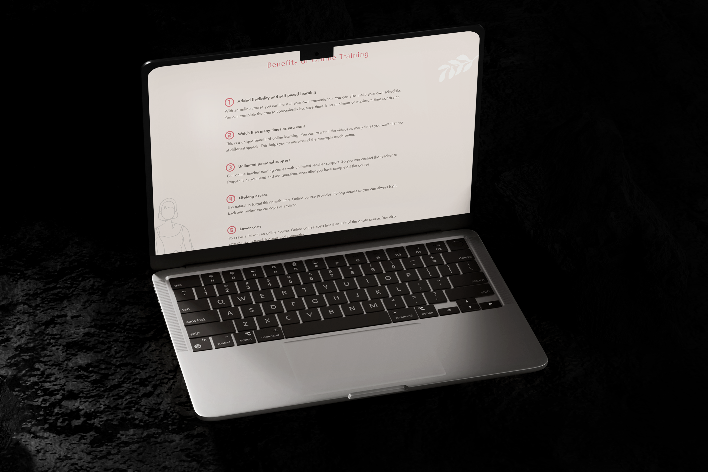

INTRO
Il redesign della landing page per una piattaforma di formazione yoga aveva come obiettivo quello di modernizzare l’aspetto visivo, mantenendo la struttura originale ma allineando la pagina maggiormente ai valori del brand e alle aspettative del pubblico. Il brand desiderava un sito dall’aspetto contemporaneo, con una navigazione user-friendly e in grado di trasmettere valori di benessere e serenità. L’unico materiale fornito era una palette di colori e il logo ufficiale, lasciando quindi ampio margine creativo per ridefinire il design e allinearlo con la visione del brand.
Il redesign della landing page per una piattaforma di formazione yoga aveva come obiettivo quello di modernizzare l’aspetto visivo, mantenendo la struttura originale ma allineando la pagina maggiormente ai valori del brand e alle aspettative del pubblico. Il brand desiderava un sito dall’aspetto contemporaneo, con una navigazione user-friendly e in grado di trasmettere valori di benessere e serenità. L’unico materiale fornito era una palette di colori e il logo ufficiale, lasciando quindi ampio margine creativo per ridefinire il design e allinearlo con la visione del brand.

LA SFIDA
La principale sfida era trasformare un layout visivamente caotico e ricco di immagini a bassa risoluzione in un design pulito e armonioso. Senza un’identità visiva definita, il rischio era quello di perdere coerenza stilistica e non riuscire a comunicare in modo efficace i valori di serenità e professionalità legati allo yoga. Per superare questi ostacoli, è stata condotta un’analisi approfondita dei competitor per identificare le tendenze dominanti nel settore del wellness e del design minimalista, integrando queste linee guida con scelte tipografiche e cromatiche mirate.
La principale sfida era trasformare un layout visivamente caotico e ricco di immagini a bassa risoluzione in un design pulito e armonioso. Senza un’identità visiva definita, il rischio era quello di perdere coerenza stilistica e non riuscire a comunicare in modo efficace i valori di serenità e professionalità legati allo yoga. Per superare questi ostacoli, è stata condotta un’analisi approfondita dei competitor per identificare le tendenze dominanti nel settore del wellness e del design minimalista, integrando queste linee guida con scelte tipografiche e cromatiche mirate.

LA SOLUZIONE
Il processo di redesign è iniziato con una ricerca approfondita sugli stili di design usati dai principali competitor nel settore wellness e yoga, identificando tendenze che includevano font sans-serif eleganti, una palette cromatica neutra e layout semplici ma armoniosi, che incorporavano elementi grafici ispirati alla natura. La selezione di due caratteri sans-serif, Tenor Sans per i titoli e Jost per i testi descrittivi, è stata compiuta per garantire coerenza visiva e migliorare la leggibilità, trasmettendo al contempo una sensazione di leggerezza. L’uso delle fotografie originali di bassa qualità è stato ridotto drasticamente, sostituendole con immagini stock di alta qualità ottimizzate e adattate allo stile generale del design. Infine, la creazione di elementi vettoriali organici personalizzati ha consentito di conferire alla pagina un’identità unica e serena.
Il processo di redesign è iniziato con una ricerca approfondita sugli stili di design usati dai principali competitor nel settore wellness e yoga, identificando tendenze che includevano font sans-serif eleganti, una palette cromatica neutra e layout semplici ma armoniosi, che incorporavano elementi grafici ispirati alla natura. La selezione di due caratteri sans-serif, Tenor Sans per i titoli e Jost per i testi descrittivi, è stata compiuta per garantire coerenza visiva e migliorare la leggibilità, trasmettendo al contempo una sensazione di leggerezza. L’uso delle fotografie originali di bassa qualità è stato ridotto drasticamente, sostituendole con immagini stock di alta qualità ottimizzate e adattate allo stile generale del design. Infine, la creazione di elementi vettoriali organici personalizzati ha consentito di conferire alla pagina un’identità unica e serena.

RISULTATO
Il redesign della landing page ha trasformato l’aspetto del sito, conferendo un’identità visiva moderna e professionale, in linea con il focus sul benessere. Il feedback è stato estremamente positivo: il design rinnovato ha ricevuto apprezzamenti per la sua coerenza visiva e la capacità di rendere la navigazione più fluida e intuitiva. L’uso mirato di immagini di alta qualità e di elementi grafici personalizzati ha valorizzato l’esperienza utente, riflettendo l’estetica e i valori della piattaforma.
Il redesign della landing page ha trasformato l’aspetto del sito, conferendo un’identità visiva moderna e professionale, in linea con il focus sul benessere. Il feedback è stato estremamente positivo: il design rinnovato ha ricevuto apprezzamenti per la sua coerenza visiva e la capacità di rendere la navigazione più fluida e intuitiva. L’uso mirato di immagini di alta qualità e di elementi grafici personalizzati ha valorizzato l’esperienza utente, riflettendo l’estetica e i valori della piattaforma.